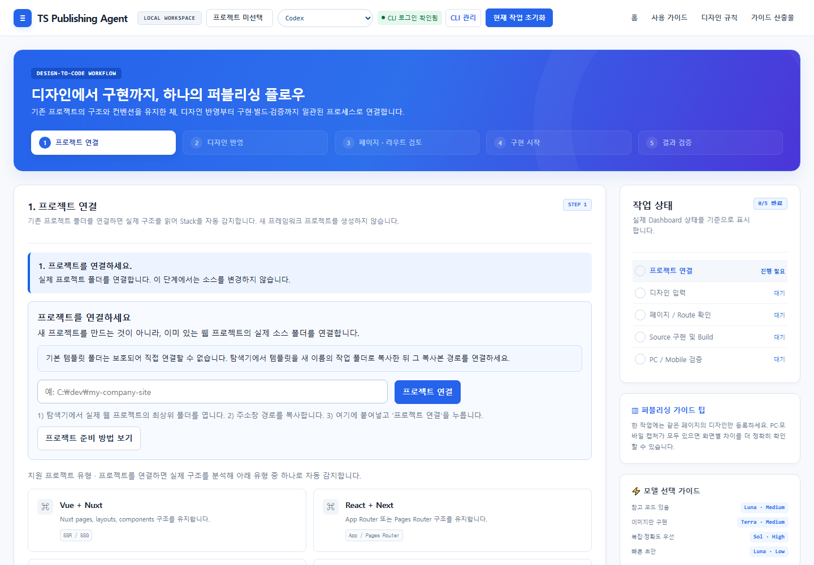
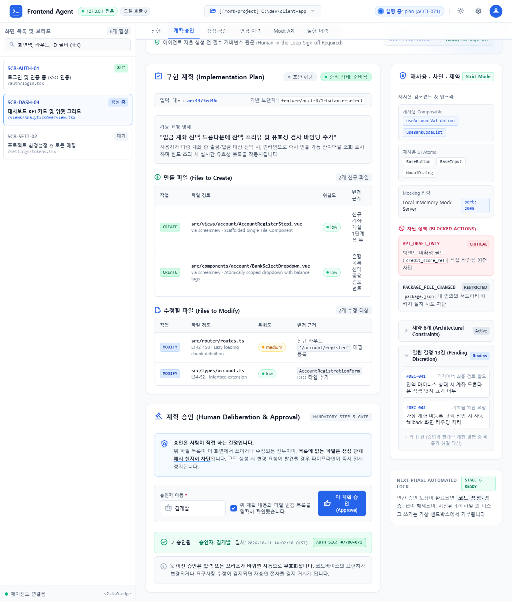
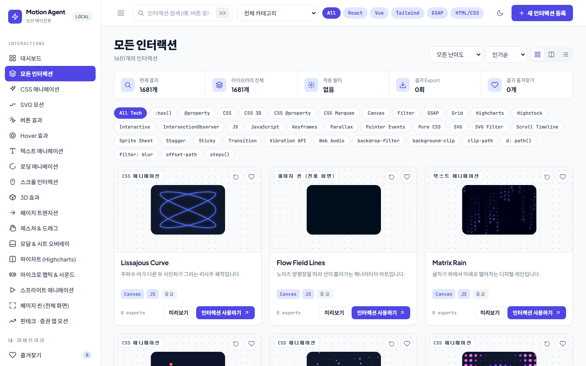

Vue 3 퇴직연금 서비스 프론트 구조 설계
컴포저블과 공통 컴포넌트 중심으로 화면 구조부터 UI 개발까지 일관되게 설계했습니다.
6개 산업 · 15개 회사 · Vue 3 실무
프론트엔드 보기 → 02 · 직접 만든 팀원 3명퍼블리싱 · 프론트 · 모션 담당 프로그램을 직접 만들어, 한 팀처럼 일합니다.
AI 자동화 보기 →금융·커머스·게임·포털·언론 6개 산업, 15개 회사에서 퍼블리싱과 Vue 구조 설계를 맡아 왔습니다.
Vue 3 실무를 바탕으로, React·Next.js·Svelte 코드를 만들고 검증하는 도구를 직접 만들 만큼 프레임워크 구조를 깊이 이해합니다.
퍼블리싱, Vue 화면 개발, 모션, 임시 서버(Mock API), 접근성·반응형 검증을 혼자 이어서 끝냅니다.
기획전 제작 200건 중 약 75%를 자동화했고, 개발 작업을 대신하는 자동화 프로그램 3종을 직접 만들었습니다.
프론트엔드 작업과 자동화 프로그램, 두 가지를 모두 소개합니다.
컴포저블과 공통 컴포넌트 중심으로 화면 구조부터 UI 개발까지 일관되게 설계했습니다.


페이지 단위 템플릿 컴포넌트와 컴포넌트 단위 SCSS로 UI 일관성과 유지보수성을 높였습니다.


고도화된 비즈니스 데이터를 위한 커스텀 차트와 캘린더 컴포넌트를 직접 제작했습니다.



화면을 맞추는 데서 끝나지 않고, 다음 사람이 이어받을 컴포넌트 구조·스타일 가이드·자동 빌드까지 남깁니다. 기획전 제작 200건 중 약 75%를 자동화했고, 한 벌의 소스로 여러 모드와 기기를 지원했습니다.
자동화 프로그램이 만든 결과는 빌드·화면 비교·접근성 검사를 거친 뒤에만 완료로 보고합니다. 프로그램이 정상 종료됐다는 것만으로 성공이라 보지 않고, 실행하지 못한 검사는 '통과'가 아니라 '미실행'으로 기록합니다.
프론트엔드 실무와 업무 자동화 프로그램 제작을 한 사람이 이어서 합니다.